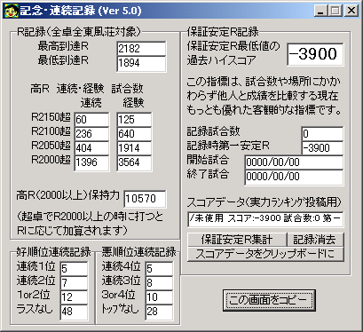

とつのスコア
・overall
既に、データを取りながらまとめて打つという作業を2002/09まででやめております。
それ以降は数十試合くらいしか打ってません。ほとんど「引退」状態です。
麻雀の研究の方をメインにしてます。
2001/04/01〜のＲ分布（雀友出力）
Ｒ平均・安定Ｒ2070前後
（好調時抜き出しならこの試合数で2075、不調時なら2050くらい）
上のグラフがみかけＲに関する全てです。1試合たりとも抜けのない長期Ｒ分布です。
敢えてみかけＲで語るなら、3500試合にわたるこのような長期Ｒの分布は、第一超ラン常連において確実にトップ10に入る程度の水準だと思われます。
長期Ｒ分布（数千試合）で見て、2000を切っていることよりも2100を超えていることの方が多い。第一最強水準とはそういうことです。
しばらくの間2100を超えるプレイヤーはいくらでも知ってますが、3000試合とかの単位でこういうプレイヤーはほとんど知りません。
（第二なら2050を切っていることよりも2150を超えていることの方が多いレベルが、おそらく最強水準でしょう）
ただし、「みかけＲ・最高Ｒ・安定Ｒの実力比較の精度」で述べられているような事実に注意してください。
上記はあくまでも「そのようなプレイヤーは、偶然性を考慮してもほとんどいない」ことを意味しているに過ぎません。
誰しも、打っていれば自己最高ＲよりもみかけＲが200以上下がる時はきます。
自己最高Ｒが2100程度の実力なら、1800台に落ちることが必ずあります。
同様に、2200に到達した人（第一超ラン最強レベル）でも2000を切ることは必ずあります。
（そういう経験がない人は、まだ「絶不調」を経験してません。もし10000試合もの間それがなければ「かなり不自然」です）
１日でＲ30低下ということが５日も６日も連続することはあることです（誇張なし）。
不調時に2000を切らない人は第一にはいないと言ってよいでしょう。
・最近の成績・打ち方
保証安定Ｒ最低値ランキング
試合数制限なし：保障安定Ｒ最低値2031：53試合第一安定Ｒ2781・集計期間01/09/02〜01/09/06
1000試合以上：保障安定Ｒ最低値2018：2612試合第一安定Ｒ2099・集計期間01/02/14〜01/11/26
他人との成績比較は、保証安定Ｒの最低値の最高記録で行うことを強く推奨します。
安定Ｒは実力を知るために用いるべきで、比較のために用いるべきではありません。
（高スコア時データ）
1000試合規模-東12
2500試合規模-試合全体
3000試合規模-試合全体
3000試合規模-東12
独自の洗練された牌効率を元に、34％という抜群の先制リーチ率を武器としてトップを奪う（トップ率30％）、攻撃的な麻雀スタイルです。
和了率・放銃率・トップ率・平均順位・リーチ率・リーチのリャンメン率・リーチツモ和了率・一発率・総得点等全てが他家平均より圧倒的に優れています。
他家平均データ（超ランにおいておれと対戦した平均的な人のデータ）と見比べれば、全てにおいて勝っていることがわかります。
上記成績の、超ラン内での偏差値表示値は、75超です。
状況判断。典型的なトップ麻雀スタイルです。
不調時はこんなもんです。
126試合で焼き鳥50回。今までのトータルでの焼き鳥率26.0％を平均として考えると、
ある無作為な126試合でこの現象が起きる確率は0.023％で、それだけついていないということです。
アタマハネとリーチ後放銃のオンパレードですね(
´Д`)
連続・記念記録
★連続記録（第一最上卓のみ）★

★記念記録★
高Ｒ：とつげき東北 試合数:5448 Rate:2182.81
待合室（5000試合以降第一最上卓のみ）
高Ｒ：とつげき東北 試合数:3560 Rate:2176.37
待合室（1300試合以降第一最上卓のみ）
損：５順目ダマ・スーアンコ単騎待ち放銃（第一最上卓）
最高点数２位：49800点（第一最上卓）
順位：とつげき東北 ランキング 試合数:88 総得点:694
平均順位:2.05（第一最上卓のみ）
過去最高得点：とつげき東北 ランキング 試合数:525
総得点:1214 平均順位:2.37（第一最上卓）
過去最低得点：とつげき東北 ランキング
試合数:96 総得点:-528 平均順位:2.79（第一最上卓）
東風荘得点ランキング記録
第52回 94位 525試合 1214点 1試合平均点2.31
第51回 331位 452試合 859点 1試合平均点1.90
第50回 450位 273試合 789点 1試合平均点2.89
第49回 規定試合数到達せず -ここから打ち方変更-
第48回 500位以下 約250試合 （750点未満程度）
第47回 500位以下 約275試合 （750点未満程度）
第46回 500位以下 約400試合 （750点未満程度）
第45回 464位 460試合 773点 1試合平均点1.68
おれはランキングは狙ってませんが（オーラストップのマンガン差込等）、安定Ｒの上昇とともに結果的に上位に入るようになりました。
全て第一超ラン。ランキングで500位に入ることは、第一超ラン限定なら20位に入ることと同程度かな？
違うレベルの卓が一様に評価されている上、試合数が多ければ多いほど有利になり実力の指標としていまいちです。
超ランの常勝組が上ランで1000試合も打てば楽勝１位になれるでしょう。
得点もトップ１回で+30など大きく変動し、得点率などでも細かくは比較できません。
絶好調なら150試合くらいで1000点近くいくし、逆に絶不調期に一時的に-300点くらいになることもあります。参考程度に。
ただし超ランの平均＋αレベル（安定1980など）の打ち手では、よほど打ちまくらない限り何度もランキングに載るようなことは困難です。
ランキングの順位で実力を比較することはできませんが、超ラン限定でのランキング上位常連は間違いなく強いとは言えます。
たまにＲ1800台がラス確してますが、「得点を目指すから」は理由になってません。1800台に落ちるようなドヘタに得点ランクはまず無理です。
（もっとも上ランに落ちれば別だが 笑 あそこなら1840でも神だからな(
≧∇≦)ﾌﾞﾊﾊﾊ!）
不調記録( ´Д`)
（親かぶり割合や終盤強さなど、第一最上卓でこれよりひどいと思われるようなデータが出た人は報告してね！）
376試合 リーチ時放銃率16.57％
リーチ回数495に対して放銃回数82（親時18.0％）。
リーチ時放銃の平均を12.5として、100試合レベルだと27.8％、50試合レベルだと43.1％の不調に相当します。
この間のリーチ和了率は45.5％（親時43.0％）。
頭はね、３家和などの連発で、8リーチ連続非和了などが何度も起きます（
´Д`）
1/6から245試合 ２副露ドラ３和了率 ０％
アガレネー
1/19〜107試合 親かぶり率33.757％
普段の親かぶり率が23％とすると、約50試合なら45％程度の不調に相当します。
02/04/01〜03/04/051181試合 終盤強さ-70.841
100試合だと-837に相当します。100試合打ったら70試合オーラスでまくられた、というのと同じ程度の水準です。
100試合のうち20試合くらいはオーラス4位で迎えてるので、「まくられ得る場合はほとんど全部まくられている」感じです。
オーラス15000点差からハネマン親被り3位とか5順目ダマハネ放銃などで2位低下が頻発し、30試合で15回まくられとか普通に起きます。
01/05/25〜01/07/20416試合 トップ守り率59.090％（オーラストップ回数113）
２位と12000点差とかでは全然安心できません。序順ダマ8000放銃、マンガンハネマンツモ親かぶり多すぎ・・・
普段のトップ守り率が72.3％とすると、約200試合なら45％程度の不調に相当します。
{kind=link}